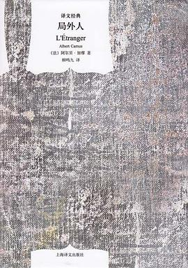

书籍介绍

三体
文化大革命如火如荼进行的同时。军方探寻外星文明的绝秘计划“红岸工程”取得了突破性进展。但在按下发射键的那一刻，历经劫难的叶文洁没有意识到，她彻底改变了人类的命运。地球文明向宇宙发出的第一声啼鸣，以太阳为中心，以光速向宇宙深处飞驰…… 四光年外，“三体文明”正苦苦挣扎——三颗无规则运行的太阳主导下的百余次毁灭与重生逼迫他们逃离母星。而恰在此时。他们接收到了地球发来的信息。在运用超技术锁死地球人的基础科学之后。三体人庞大的宇宙舰队开始向地球进发…… 人类的末日悄然来临。

局外人
《局外人》是加缪小说的成名作和代表作之一，堪称20世纪整个西方文坛最具有划时代意义最著名小说之一，“局外人”也由此成为整个西方文学-哲学中最经典的人物形象和最重要的关键词之一。
追风筝的人
12岁的阿富汗富家少爷阿米尔与仆人哈桑情同手足。然而，在一场风筝比赛后，发生了一件悲惨不堪的事，阿米尔为自己的懦弱感到自责和痛苦，逼走了哈桑，不久，自己也跟随父亲逃往美国。 成年后的阿米尔始终无法原谅自己当年对哈桑的背叛。为了赎罪，阿米尔再度踏上暌违二十多年的故乡，希望能为不幸的好友尽最后一点心力，却发现一个惊天谎言，儿时的噩梦再度重演，阿米尔该如何抉择？ 故事如此残忍而又美丽，作者以温暖细腻的笔法勾勒人性的本质与救赎，读来令人荡气回肠。